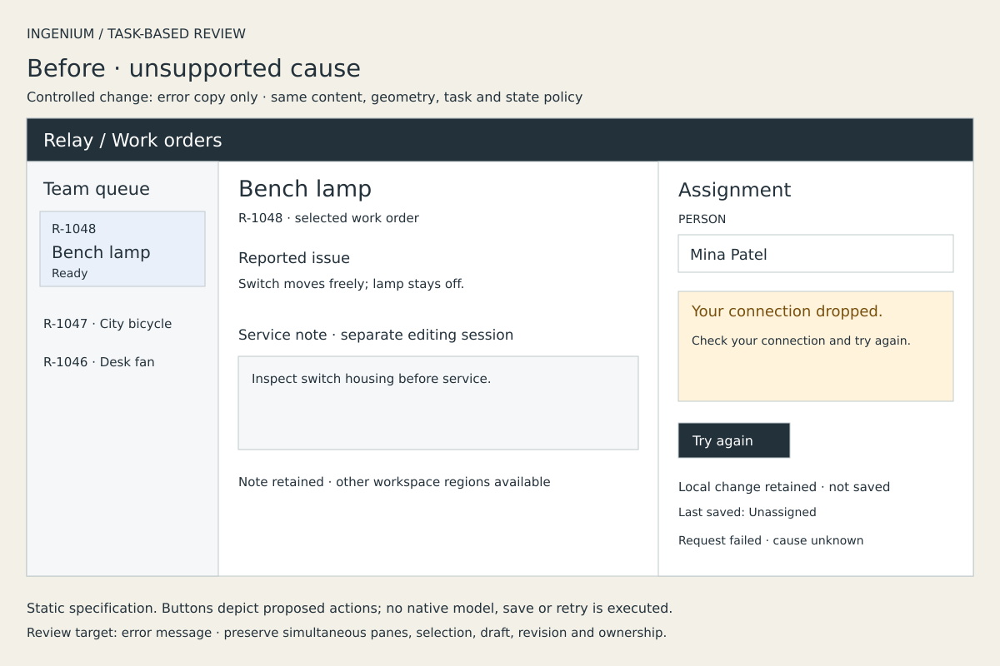
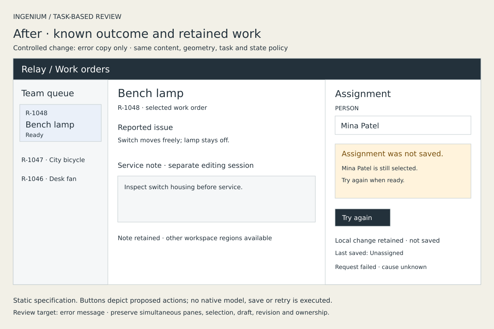

Structural wireframe
Before: Too many cards; remove two.
After: Identify competing information for the selected task. Propose grouping while keeping required information and actions. Any user-impact claim stays tentative.
INGENIUM / SELECTED REVIEW PRACTICES
A controlled, newly authored synthetic example. The review changes an unsupported explanation while preserving the dense workspace and its state policy. This is a prospective demonstration, not a historical model comparison or a measured usability result.


Editable before SVG · Editable after SVG
These images specify a product. Their depicted buttons are not interactive. No editing, save, retry or Undo behavior executes here. The links and disclosure below belong to this review gallery.
Target: assignment error message. Evidence: failed request save-q1 for working r2; cause unknown. Observed defect: the first message asserts a connection failure. Tentative consequence: a person might troubleshoot their connection unnecessarily. Smallest correction: state that the assignment was not saved and the selected person remains. The consequence has not been tested with users.
Complete fixture · Exact source identities · Exact render identities
Prospective review cases. These weak “before” recommendations were written for this demonstration; they are not findings attributed to previous Ingenium runs.
Before: Too many cards; remove two.
After: Identify competing information for the selected task. Propose grouping while keeping required information and actions. Any user-impact claim stays tentative.
Before: Polish the labels but leave valid input leading directly to Saved.
After: Name the misleading edge. Require a matching fresh acknowledgement, while keeping failure, retry and retained values.
Before: Clear invalid input, add Apply All, or rewind revision identity on Undo.
After: Retain raw input separately, preserve automatic valid updates, resolve active drafts before model Undo, and restore values through a new revision.
Before: Replace simultaneous panes with a wizard because fewer choices seem easier.
After: Inspect the cross-pane task. Preserve free navigation, shared editing ownership and necessary comparison context; disclose the cost of any proposed disclosure.
Before: Explain an unknown failure as a dropped connection.
After: State the known failure, retained work and available next action. Keep independent regions available.
Before: Vary words, type, color and shape, then call the shape superior.
After: Label exploration honestly, or compare the requested factor on identical content. Keep preference open and inspect compatibility separately.
Before: Pick the family with the highest average contrast.
After: Check each applicable role pair and state. Preserve semantic roles and noncolor cues; distinguish focus from selection and leave taste open.
Before: Replace an established family because a detector calls it overused.
After: Inspect actual reading content, roles, wrapping and glyph evidence. Preserve fixed metrics or disclose tuned changes; retain font-binding uncertainty.
One conditional paragraph in the existing shared study contract now makes review order, evidence reconciliation and preservation boundaries explicit. All eight methods and interfaces remain intact. No engine, hooks, detectors, scores or aesthetic bans were imported.